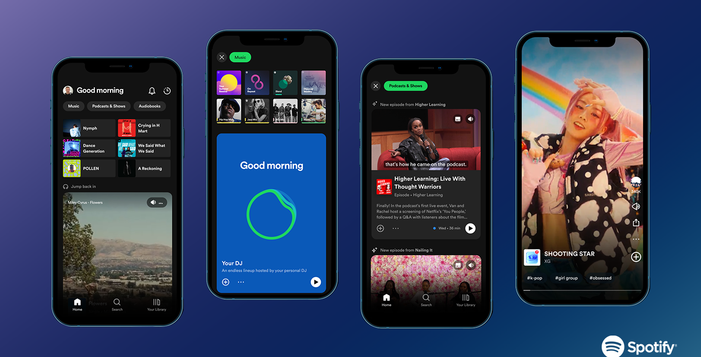

This project analyzed Spotify data to create a personalized music recommendation system by grouping songs based on audio features like tempo, energy, and loudness. The goal was to improve user retention and engagement by offering tailored recommendations that matched listener preferences. By understanding music trends and user behavior, the system aimed to enhance the Spotify experience, drive higher streaming time, and increase subscription loyalty.

.jpg)
This project analyzed Delta Airlines' flight performance to identify patterns in delays, cancellations, and operational efficiency. The goal was to uncover insights that could help Delta optimize operations, improve customer satisfaction, and enhance performance during high-demand periods. Key findings revealed that operational issues and weather conditions were the primary causes of delays and cancellations, particularly during December to February. Recommendations included targeting problem cities, optimizing routes in peak seasons, and increasing flight capacity on high-demand days like Fridays to minimize delays and cancellations.
This project visualized the Paris 2024 Olympic dataset to provide insights into medal distribution, athlete performance, and gender dynamics. Key analyses included medal breakdown by country, gender distribution of participants, and medalists by sport and gender. Using Tableau dashboards, the project highlighted trends such as top-performing countries, sports with the most gender balance, and event-specific medal details. These insights aim to support strategic sponsorship opportunities, athlete recognition, and engagement in global sports marketing efforts.

This project involved exploring Netflix dataset to analyze content trends, regional preferences, and release patterns using SQL. The objective was to provide insights into content acquisition and regional popularity dynamics. By examining factors such as genres, release years, and viewership trends across locations, the project aimed to help Netflix optimize content availability, improve regional engagement, and inform better strategic decisions for content planning and marketing efforts.
This project focused on analyzing customer shopping transactions in Excel to uncover purchasing patterns, product preferences, and sales trends across age groups, gender, and seasons. The project aimed to optimize inventory management, product placement, and marketing strategies for retailers. By understanding demographic trends, seasonal demand, and product popularity, businesses could make data-driven decisions to boost sales, reduce stock-outs, and improve customer satisfaction and loyalty.
View Project
Developed unigram and bigram language models from scratch using the Brown Corpus dataset. Implemented data preprocessing, applied add-λ smoothing, and evaluated models using perplexity across training, validation, and test sets. Generated random sentences to showcase the models' language patterns and performance.